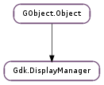

| static | get() |
| get_default_display() | |
| list_displays() | |
| open_display(name) | |
| set_default_display(display) |
| Name | Type | Flags | Description |
|---|---|---|---|
| default-display | Gdk.Display | r/w | The default display for GDK |
| Name | Parameters | Return | Description |
|---|---|---|---|
| display-opened | Gdk.Display | The ::display-opened signal is emitted when a display is opened. |
Bases: GObject.Object
The purpose of the Gdk.DisplayManager singleton object is to offer notification when displays appear or disappear or the default display changes.
You can use Gdk.DisplayManager.get () to obtain the Gdk.DisplayManager singleton, but that should be rarely necessary. Typically, initializing GTK+ opens a display that you can work with without ever accessing the Gdk.DisplayManager.
The GDK library can be built with support for multiple backends. The Gdk.DisplayManager object determines which backend is used at runtime.
When writing backend-specific code that is supposed to work with multiple GDK backends, you have to consider both compile time and runtime. At compile time, use the #GDK_WINDOWING_X11, #GDK_WINDOWING_WIN32 macros, etc. to find out which backends are present in the GDK library you are building your application against. At runtime, use type-check macros like GDK_IS_X11_DISPLAY() to find out which backend is in use:
Backend-specific code
#ifdef GDK_WINDOWING_X11
if (GDK_IS_X11_DISPLAY (display))
{
/&ast make X11-specific calls here &ast/
}
else
#endif
#ifdef GDK_WINDOWING_QUARTZ
if (GDK_IS_QUARTZ_DISPLAY (display))
{
/&ast make Quartz-specific calls here &ast/
}
else
#endif
g_error ("Unsupported GDK backend");
| Returns: | The global Gdk.DisplayManager singleton; Gdk.parse_args (), Gdk.init (), or Gdk.init_check () must have been called first. |
|---|---|
| Return type: | Gdk.DisplayManager |
Gets the singleton Gdk.DisplayManager object.
When called for the first time, this function consults the GDK_BACKEND environment variable to find out which of the supported GDK backends to use (in case GDK has been compiled with multiple backends). Applications can use Gdk.set_allowed_backends () to limit what backends can be used.
| Returns: | a Gdk.Display, or None if there is no default display. |
|---|---|
| Return type: | Gdk.Display |
Gets the default Gdk.Display.
| Returns: | a newly allocated GLib.SList of Gdk.Display objects. Free with GLib.SList.free () when you are done with it. |
|---|---|
| Return type: | [Gdk.Display] |
List all currently open displays.
| Parameters: | name (str) – the name of the display to open |
|---|---|
| Returns: | a Gdk.Display, or None if the display could not be opened |
| Return type: | Gdk.Display |
Opens a display.
| Parameters: | display (Gdk.Display) – a Gdk.Display |
|---|
Sets display as the default display.